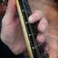

Divers in Mexico’s Underwater Caves Get a Glimpse of Rarely Seen Artifacts, Fossils and Human Remains


u/imacmadman22
2m ago
It takes a brave person to dive in these places, I get anxious just looking at the pictures, there is no way I could visit these places without feeling extremely claustrophobic.
u/De_Vermis_Mysteriis
2m ago
That was a great article! And I love underwater cave photography, they got some really great lighting on a lot of those shots.
Really interesting article! I love how divers are working with scientists to explore difficult to reach areas like this. Super cool how the different minerals in the caves give a different hue to the water depending on where the diver is in the system.